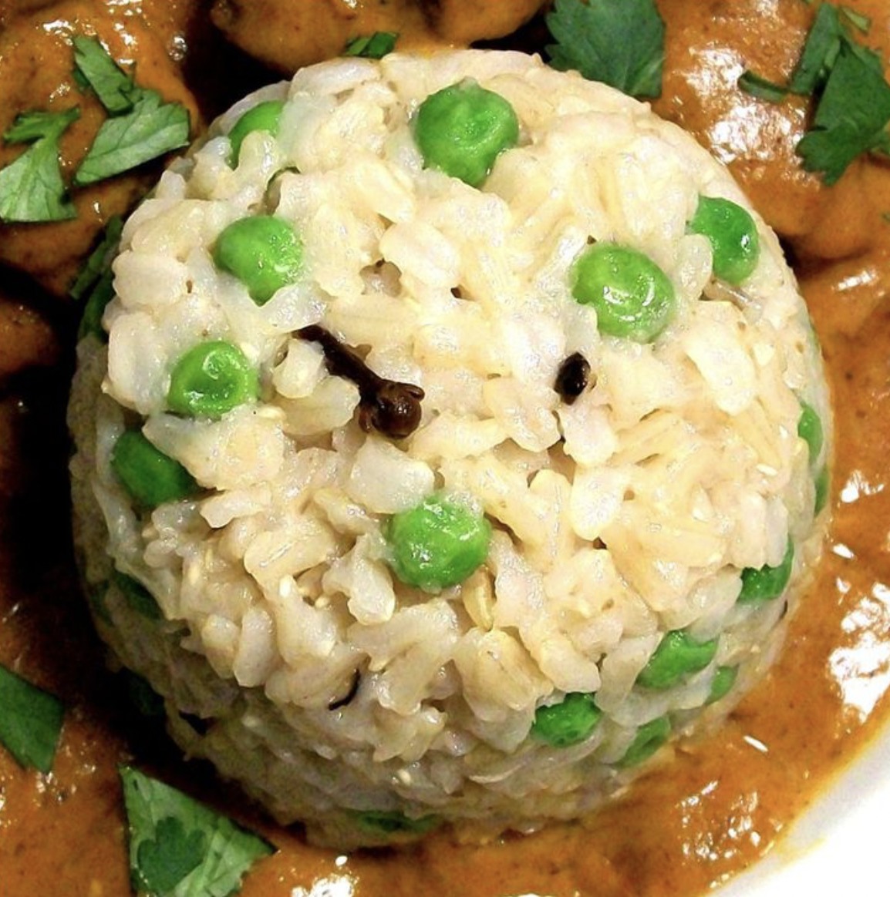

Mata Pulao Recipe

Ingredients:
- 2 tablespoons vegetable oil
- 4 whole cloves
- 3 black cardamom seeds
- 6 whole black peppercorns
- 2 (3 inch) cinnamon sticks
- 2 teaspoons garlic powder
- 2 tablespoons water
- 1 cup frozen green peas, thawed
- 2 cups uncooked basmati rice, rinsed and drained
- 4 cups water
- salt to taste
Follow These Steps:
- Heat the oil in a deep heavy skillet over low heat. Add the cloves, cardamom seeds, peppercorns and cinnamon sticks. Cook for a few minutes to bring out the aroma of the spices. Stir the garlic powder and 2 tablespoons of water together to make a paste; mix into the pan with the spices.
- Add the green peas to the pan, cover and cook for about 5 minutes.
- Add the remaining 4 cups of water and rice to the pan. Season with a little salt. Bring to a boil, then cover, and cook for about 15 minutes, until the rice is tender and the water has been absorbed. Taste, and adjust the salt before serving.